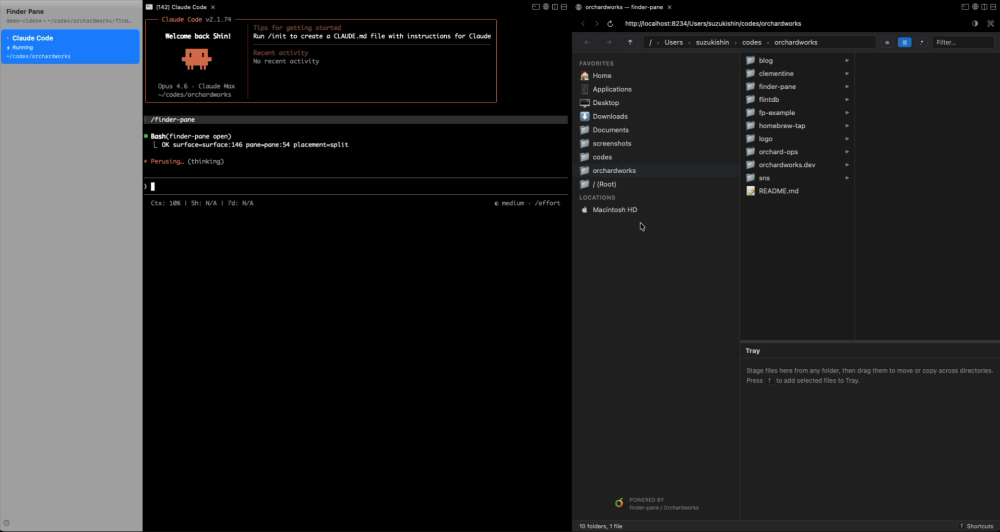
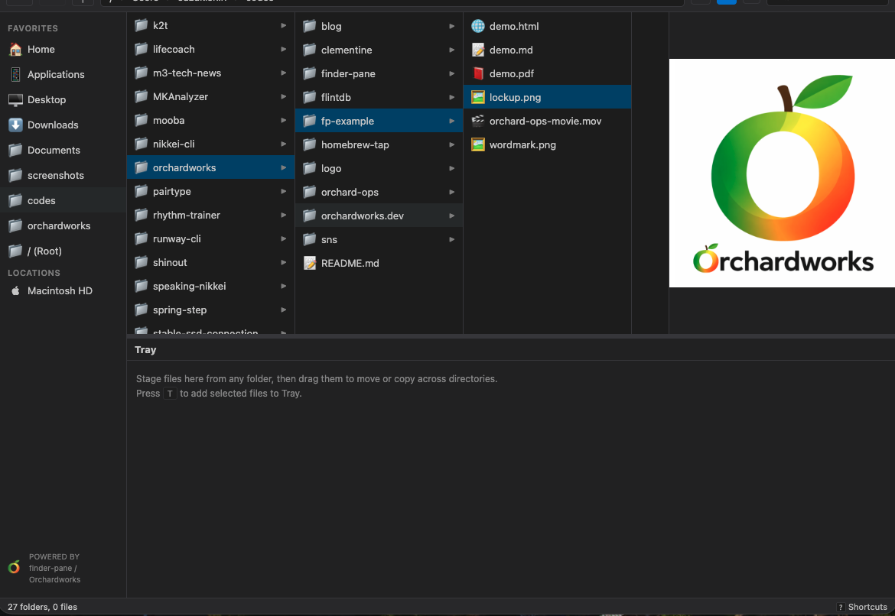
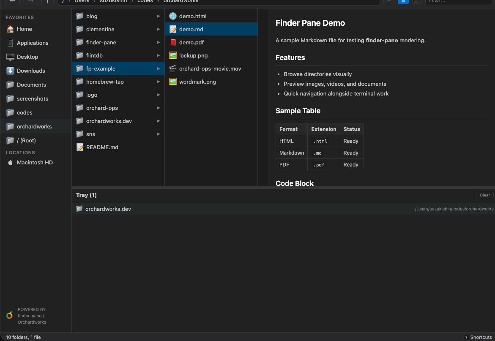
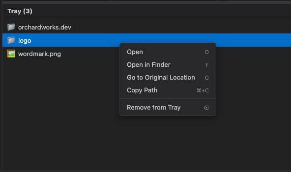

Finder Pane
A visual file browser for your terminal.
Browse files, preview images and videos right next to Claude Code.
$ brew install orchardworks/tap/finder-pane

Browse files while you code
finder-pane runs in a browser pane next to Claude Code via cmux.
See your directory structure, navigate folders, and check what's there — without switching windows.
Preview files instantly
Click a file to preview it inline. Images, videos, Markdown, PDF, HTML — no need to open another app.
Great for checking generated images, reading docs, or reviewing video output without leaving your workflow.


One workspace for scattered files
Pin files from any directory into the tray. Preview images, compare outputs, all without juggling Finder windows.

One command to open
Type
/finder-pane in Claude Code and it opens instantly.
The Claude Code skill handles server startup and browser pane — you just say the word.
Get started
1
Install
brew install orchardworks/tap/finder-pane
2
Add Claude Code skill
finder-pane install-skill
Enables
/finder-pane command in Claude Code3
Use
/finder-pane
Opens current directory in a browser pane
macOS
Open Source
Zero Dependencies
← Orchardworks